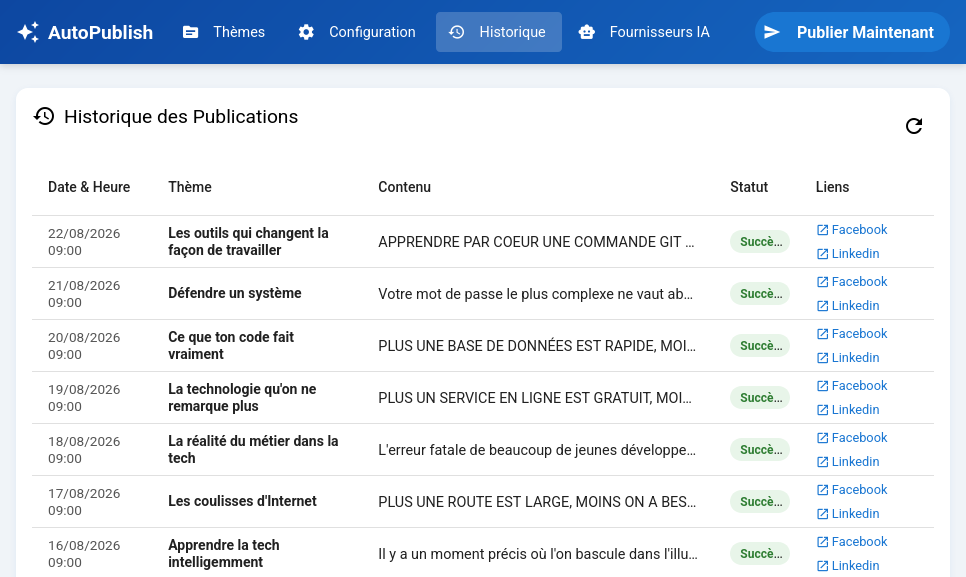

AutoPublish — Automatisation de Publications Multi-Plateforme
Problématique : Publier régulièrement du contenu technique pertinent sur les réseaux sociaux professionnels (LinkedIn, Facebook) requiert une veille continue et un travail de rédaction long.
Solution : Automatisation complète du traitement de flux RSS ciblés. Les articles détectés sont résumés et restructurés par un LLM de Hugging Face sous forme de posts optimisés pour le web social.
Architecture : Un script NodeJS exécuté périodiquement au sein d'un conteneur Docker, synchronisé avec des scénarios Low-Code dans n8n pour orchestrer l'ingestion, le traitement IA et les publications sur les APIs LinkedIn et Facebook.
n8n
Hugging Face LLM
NodeJS / Express
APIs Social
Docker